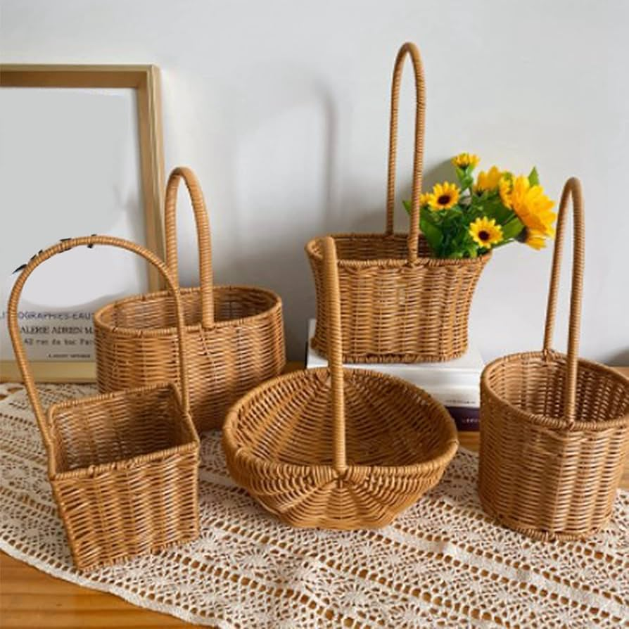

Affordable, respectful reuse — discover more, spend less
E4A exists to make second-hand selling simple, fair and rewarding. Instead of giving things away for free — where value is often overlooked — people list items they no longer need at low prices so buyers can appreciate and reuse them. We make it easy to buy quality goods at modest prices while helping sellers earn fairly and reduce waste.

Our Mission
To build a trusted, easy-to-use marketplace that promotes affordable reuse across communities. We encourage sellers to list pre-loved items at small, respectful prices — not free — so those goods are valued and cherished. We provide tools, education and fair commerce so sellers can earn, buyers can save, and products can live longer lives.
Our Vision
We envision a continent where every item finds a valued home. By normalizing low-price resale we reduce waste, uplift small sellers, and make everyday quality accessible to more people. E4A is a place where community, dignity and affordability meet.
Why we built E4A
Many small businesses in Africa face barriers to scale: limited access to marketplaces, payments complexity, and distribution challenges. E4A started as a simple idea — give creators a fair, beautiful place to sell, and give buyers an easy way to discover authentic African goods. Since then we've grown into a community that values fairness, transparency and design.
People First
We design for real sellers and buyers, not algorithms. Support and fairness guide our decisions.
Local Roots, Global Reach
We celebrate local traditions while providing the tools to sell beyond borders.
Sustainable Growth
Business tools, education and simple commerce to help micro-businesses scale responsibly.